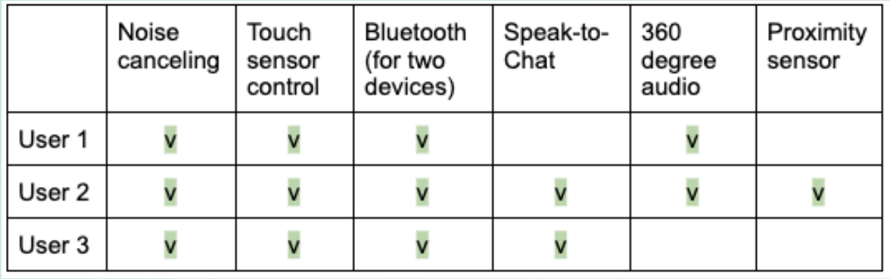

CSCI1300: Personas and Storytelling
Background
This summer, I purchased a Sony WH-1000XM4 Wireless Noise-Canceling Headphones. Not only were there so many user
reviews
on an online platform, but there were so many friends around me who have been using them for a long time already.
After
coming back on campus, I have been wearing them everywhere – from the gym, between classes, to my favorite study spot
Barus & Holley Cafe. As I looked around the cafe, there were so many others who were working while wearing the same
headphone model as me, and I wanted to observe and investigate how other colleagues were using the headphone,
specifically in terms of:
- How users interacted with the headphone (e.g. carrying, turning it on, connecting device, etc)
- What motivate users to use headphone (over earphones)
- What challenges users had using these headphones
My Interface

As pictured, Sony headphones support noise canceling, but there are other functionalities like touch sensor control (double tapping to play/pause or to accept calls, swiping forward/backward for next/previous track, swiping up/down to increase/decrease volume).
UX Research
Preparation
Before we start collecting information on the users, I prepared some questions to ask:
1. When did you purchase your headphones?
2. What factor about the headphones convinced you to purchase your headphones?
3. On a scale of 1 to 10 (1 being challenging and 10 being perfect), how has your experience been with the headphones so
far? Why?
4. When you were using the headphones just now, did you activate the noise canceling?
5. Do you also own earphones? If so, what made you choose headphones over earphones today?
6. What are all the functionalities you know about Sony XM4 Headphones?
7. Out of the functionalities you listed, which one do you use the least?
Observation
After observing three users at the Barus & Holley Cafe:
- There are two different ways users carry around their headphones: in a case or around their neck. Though, there was a consensus on the way all three users turned on their headphones; they would first wear them on their head and press on the power button on the bottom of the left.
- One out of three users took a longer time (around 1 minute) connecting to their device (laptop) while the other two started listening to their music (using Spotify) after connecting to their device (phones) within 20 seconds.
- All three users used touch sensor control to pause, raise volume, and forward to the next track.
- When disturbed by other people, rather than pausing or deactivating noise canceling, they took off their headphones to have a conversation.
Takeaways
I had the opportunity to interview these users and these were the main takeaways:
-
When did you purchase your headphones?
- Two users purchased Sony headphones in fall of 2021, and one user purchased them July of 2022.
-
What factor about the headphones convinced you to purchase your headphones?
- The first thing that all three users commented was that they heard of/read about excellent noise canceling functions and good sound quality. These were all important to them because they were all avid listeners on Spotify and previously struggled with distractions.
- One added that they saw a review that said the sound does not leak with these headphones. Another mentioned the headphones’ external design and, specifically, the color choice of beige. Last user also remarked that they wanted headphones that fit their head perfectly so that they can wear them while running/working out.
-
On a scale of 1 to 10 (1 being challenging and 10 being perfect), how has your experience been with the headphones so far? Why?
- Two of them said 8 for the same issue of having trouble connecting to their device, and one added that the abundance of functionalities overwhelm her because she frequently forgets and has to relearn them.
-
When you were using the headphones just now, did you activate the noise canceling?
- All three of them had activated their noise canceling because they were in a bustling and busy environment, but one commented that it sometimes causes her headache.
-
Do you also own earphones? If so, what made you choose headphones over earphones today?
- All three of them own earphones, and two out of three mentioned that the earphones hurt their ears after wearing them, which was their biggest concern regarding earphones. These two users have also purchased headphones a year ago, so they find headphones more comfortable than earphones now.
- One of the three jokingly said that people bother them less when he wears headphones than when he wears earphones.
- Another reflected that although earphones are more portable, there was a placebo effect that headphones bring that help him be more productive.
-
What are all the functionalities you know about Sony XM4 Headphones?

Speak-to-chat: picks up sound of the voice when talking on the phone
360 degree audio: provides immersive music experience based on spatial audio technology
Proximity sensor: detects whether the headset is worn on the ears
-
Out of the functionalities you listed, which one do you use the least
- The two who listed the 360 degree audio feature both mentioned they have never tried setting up 360 degree audio because it was too complicated and required too many steps.
- The other one mentioned Speak-to-Chat because she talks to herself a lot, which pauses her music very frequently, so she finds this feature inconvenient.
Personas
After collecting information from three users I interviewed, I created two personas.
Storyboards
To authenticate the persona, I drew a storyboard for Astrid:
Conclusion
From this project, I learned a lot about how the products can offer so many functionalities, but users specifically look for and use only parts of them. The users can use the products differently from how the product design intended them to. Additionally, I gained more insight into creating personas and storyboards that the user researchers could use in their process of building a product. If I were to do this project again, I would doing a study on a product that is used more publicly and creating more than two personas.